Analizadores en Elasticsearch¶
Sentencias de ejemplo
Descarga el Fichero con los ejemplos y cópialo en el panel de comandos de Kibana de la herramienta Dev Tools
Introducción¶
En el proceso de indexación sobre los campos de texto, el sistema realiza un análisis que viene determinado por el “Analizador” utilizado. Elasticsearch tiene una serie de analizadores que podemos utilizar y que podemos personalizar según nuestras necesidades. En el proceso de análisis se aplican varias herramientas:
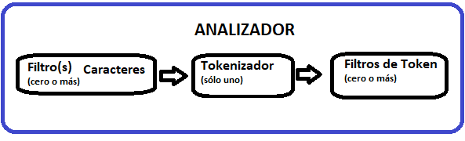
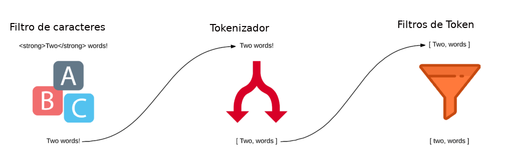
Filtro de caracteres¶
Permite sustituir caracteres en el texto original. Tenemos en la referencia diferentes tipos
https://www.elastic.co/guide/en/elasticsearch/reference/current/analysis-charfilters.html
Por ejemplo, podemos si queremos sustituir emoticonos por texto como sigue:
:) por _contento_
:( por _triste_
podemos probar el siguiente filtro
GET /_analyze
{
"tokenizer": "keyword",
"char_filter": [
{
"type": "mapping",
"mappings": [
":) => _contento_",
":( => _triste_"
]
}
],
"text": "Hola ayer bien :), pero hoy mal :("
}
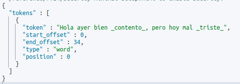
Tokenizador¶
Es el proceso en el que el analizador divide en palabras separadas. En la referencia tenemos como definir diferentes tokenizadores.
https://www.elastic.co/guide/en/elasticsearch/reference/current/analysis-tokenizers.html
Vamos a ver un ejemplo de la referencia en el que utiliza el tokenizador “lowercase” y vemos como divide y pone en minúsculas la frase enviada:
POST _analyze
{
"tokenizer": "lowercase",
"text": "The 2 QUICK Brown-Foxes jumped over the lazy dog's bone."
}
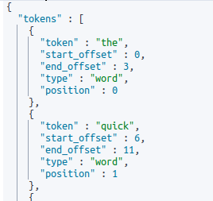
...Filtros de Token¶
En este proceso, se puede por ejemplo:
- Eliminar lo que llaman stopwords o palabras vacías: artículos, pronombres, preposiciones.
- En este proceso podemos reducir palabras a su base(por ejemplo “telefonía” a “telef”...),
- Se pueden añadir sinónimos….
- ....
En la referencia tenemos todos los tipos de filtros
https://www.elastic.co/guide/en/elasticsearch/reference/current/analysis-tokenfilters.html
Por ejemplo, en un índice de títulos de películas, podríamos tener lo siguiente
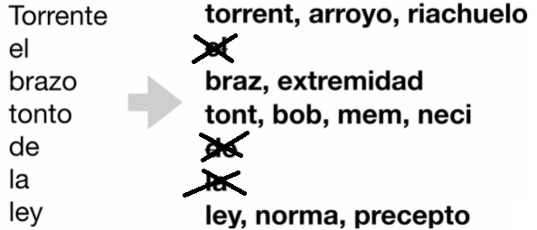
Analizadores integrados en Elasticsearch¶
Tenemos una serie de analizadores ya dispuestos para su uso en el sistema que podemos ver en:
https://www.elastic.co/guide/en/elasticsearch/reference/current/analysis-analyzers.html
Por ejemplo:
- Standard analyzer
- Language analyzers
- Whitespace analyzers
- ….
vamos a ver algunos ejemplos
Standard Analyzer¶
Es el analizador predeterminado en Elasticsearch. Si no es anulado por otro, todos los campos de tipo text se analizarán por este analizador. Podemos ver los detalles en
https://www.elastic.co/guide/en/elasticsearch/reference/current/analysis-standard-analyzer.html
Podemos probarlo
POST _analyze
{
"analyzer": "standard",
"text": "The 2 QUICK Brown-Foxes jumped over the lazy dog's bone."
}
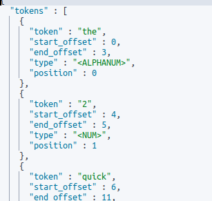
Admite parámetros para mejorar el análisis.
Por ejemplo,vamos quitar las stopwords en castellano(por ejemplo “el, a...”). Para ello creamos el analizador en un índice y lo utilizamos
PUT mi-indice
{
"settings": {
"analysis": {
"analyzer": {
"mi_analizador_es": {
"type": "standard",
"max_token_length": 5,
"stopwords": "_spanish_"
}
}
}
}
}
POST mi-indice/_analyze
{
"analyzer": "mi_analizador_es",
"text": "En un lugar de la Mancha, de cuyo nombre no quiero acordarme, no ha mucho tiempo que vivía un hidalgo...."
}
Analizador en español¶
Pero cada idioma tiene sus peculiaridades, imaginemos que tenemos que utilizar Elasticsearch como motor de búsqueda en un proyecto de noticias en español , podemos imaginar que tenemos acentos, eñes,...que no aparecen en inglés. Por ejemplo, si creamos el siguiente índice
POST /noticias/_doc
{
"titulo": "ejemplo...Los maños están de celebración el día de Pilar"
}
GET /noticias/_search
{
"query": {
"match": {
"titulo": "celebración"
}
}
}
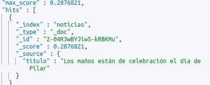
Pero el problema lo tenemos cuando el usuario que escribe la consulta, por ejemplo, tiene problemas de ortografía y no sabe que celebración lleva acento.
GET /noticias/_search
{
"query": {
"match": {
"titulo": "celebracion"
}
}
}
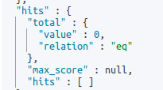
Vamos a eliminar el índice anterior
DELETE /noticias
PUT /noticias
{
"settings": {
"analysis": {
"filter": {
"spanish_stop": {
"type": "stop",
"stopwords": "_spanish_"
},
"spanish_keywords": {
"type": "keyword_marker",
"keywords": ["ejemplo"]
},
"spanish_stemmer": {
"type": "stemmer",
"language": "light_spanish"
}
},
"analyzer": {
"mianalizador": {
"tokenizer": "standard",
"filter": [
"lowercase",
"spanish_stop",
"spanish_keywords",
"spanish_stemmer",
"asciifolding"
]
}
}
}
}
, "mappings": {
"properties": {
"titulo": {
"type": "text",
"analyzer": "mianalizador",
"fields": {
"keyword": {
"type": "keyword",
"ignore_above": 256
}
}
}
}
}
}
POST /noticias/_doc/
{
"titulo": "ejemplo...Los maños están de celebración el día de Pilar"
}
GET /noticias/_search
{
"query": {
"match": {
"titulo": "celebracion"
}
}
}
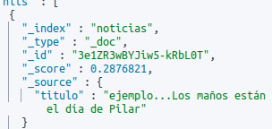
El Analizador analizado...
Podemos ver cómo actúa el analizador para estudiar si creará el índice necesario para las búsquedas que nuestro proyecto requiere y podamos observar que:
- no creamos un análisis demasiado profundo con un coste de espacio y proceso no necesario para el proyecto
- que nos quedemos escasos para que la búsqueda sea eficaz
Vamos a probar nuestro analizador
POST noticias/_analyze
{
"analyzer": "mianalizador",
"text": "ejemplo...Los maños están de celebración el día de Pilar"
}
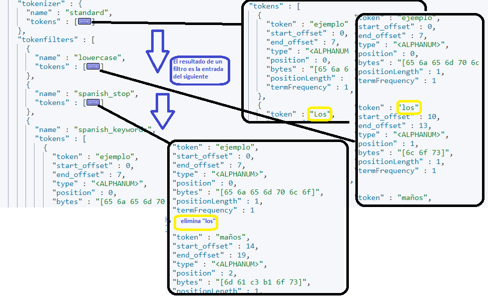
Plantillas de índices¶
En un entorno de producción se suelen dividir los índices, por ejemplo, las noticias por años, o los logs por meses o días. Por ello, a la hora de definir los índices, se crean los que se llaman plantillas a partir de las que creamos los índices. Tenemos dos tipos desde la última versión:
- Index-template: Define la estructura de un conjunto de índices.
- Component template: Las plantillas de componentes son bloques de construcción para construir plantillas de índice
Vamos a ver un ejemplo, imaginemos que queremos guardar las noticias en un índice diferente cada año y además queremos tener el analizador en español disponible para otras plantillas.
- Creamos el Componet template que contendrá el analizador
PUT _component_template/plantilla_analizador_es { "template": { "settings": { "analysis": { "filter": { "spanish_stop": { "type": "stop", "stopwords": "_spanish_" }, "spanish_keywords": { "type": "keyword_marker", "keywords": ["ejemplo"] }, "spanish_stemmer": { "type": "stemmer", "language": "light_spanish" } }, "analyzer": { "mianalizador": { "tokenizer": "standard", "filter": [ "lowercase", "spanish_stop", "spanish_keywords", "spanish_stemmer", "asciifolding" ] } } } } } } - Creamos una plantilla(index template) para todos los índices que el nombre empiece por
noticias-e indicamos que está compuesto por el anteriorPUT _index_template/noticias-template { "index_patterns": ["noticias-*"], "template":{ "mappings":{ "properties": { "titulo": { "type": "text", "analyzer": "mianalizador" } } } }, "priority":500, "version": 1, "composed_of": ["plantilla_analizador_es"] } - Creamos el primer documento en el índice
noticias-2021POST /noticias-2021/_doc/ { "titulo": "Se acabó la pandemia….celebro mi cumpleaños el sabado" } Se puede ver en detalle cómo realiza el análisis POST noticias-2021/_analyze { "analyzer": "mianalizador", "text": "mi cumpleaños es el Martes", "explain": true } - Podemos ver que la estructura es la de la plantilla
GET /noticias-2021/_mapping
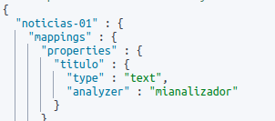
Búsqueda de autocompletado¶
Imaginemos que queremos que en cuanto el usuario comience a escribir, comenzar a dar resultados al usuario de posibles coincidencias, es decir, como hace el buscador de Google. Para ello, si tenemos el token:
elasticsearch
lo descomponemos en
el, ela, , elas, elast, elasti, elastic, le, lea
Vamos a ver un ejemplo, borraremos lo anterior
DELETE /noticias*
DELETE /index_template/noticias*
DELETE _component_template/plantilla*
"custom_edge_ngram": {
"type": "edge_ngram",
"min_gram": 2,
"max_gram": 10
}
},
PUT _component_template/plantilla_analizador_es
{
"template": {
"settings": {
"analysis": {
"filter": {
"spanish_stop": {
"type": "stop",
"stopwords": "_spanish_"
},
"spanish_keywords": {
"type": "keyword_marker",
"keywords": ["ejemplo"]
},
"spanish_stemmer": {
"type": "stemmer",
"language": "light_spanish"
},
"custom_edge_ngram": {
"type": "edge_ngram",
"min_gram": 2,
"max_gram": 10
}
},
"analyzer": {
"mianalizador": {
"tokenizer": "standard",
"filter": [
"lowercase",
"spanish_stop",
"spanish_keywords",
"spanish_stemmer",
"asciifolding",
"custom_edge_ngram"
]
}
}
}
}
}
}
PUT _index_template/noticias-template
{
"index_patterns": ["noticias-*"],
"template":{
"mappings":{
"properties": {
"titulo": {
"type": "text",
"analyzer": "mianalizador"
}
}
}
},
"priority":500,
"version": 1,
"composed_of": ["plantilla_analizador_es"]
}
POST /noticias-01/_doc/
{
"titulo": "El gran libro de elasticseach"
}
POST noticias-01/_analyze
{
"analyzer": "mianalizador",
"text": "El gran libro de elasticseach"
}
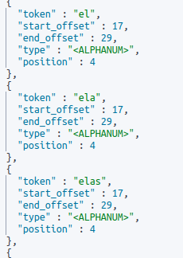
Atentos
Todo tiene un coste y tendremos un índice de mayor tamaño.
Ejercicio 4¶
Ejercicio Analizadores
Prueba a analizar cuatro frases sobre el analizador que hemos ido creando y observa el resulta. Puedes, si lo deseas, consultar la documentación oficial y jugar y probar nuevas opciones en el analizador. Captura de pantalla de las sentencias enviadas y los resultados.
Ejercicio 4_b(opcional)¶
Ejercicio opcional
Crea una plantilla llamada noticias-cat-template que permita analizar noticias en catalán. Realizar varias pruebas de análisis de texto en catalán y entrega el código del filtro y capturas de pantalla de las pruebas realizadas